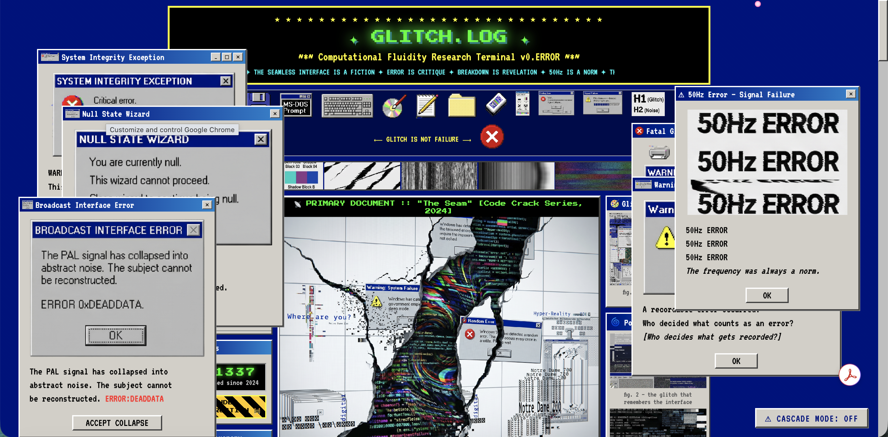
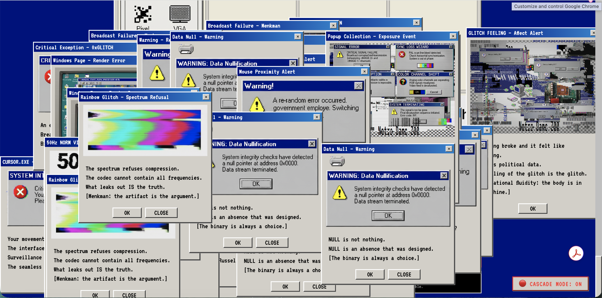

Speculative Web — Critical Media Theory & Queer Technology Studies
computational fluidity
A speculative web experience exploring the political potential of digital failure — glitch, noise, and system breakdown as sites of cultural meaning, queer resistance, and media-theoretical inquiry.

Computational fluidity describes the condition of digital systems to operate, fail, and generate meaning along a spectrum rather than within a binary — and the political potential that emerges when we recognize this condition as structural rather than accidental. It is not a description of broken technology, but an analytical concept for understanding how digital systems expose, mirror, and subvert the binaries through which culture, identity, and power are organized.
The project intervenes at the intersection of media infrastructure, queer theory, and the politics of the interface. What we call errors — glitches, bugs, unexpected outputs — are not deviations from how technology works, but revelations of how it has always worked. Seamless interfaces conceal the labor, exclusions, and decisions embedded within them. Computational fluidity is the name for the friction between what systems do and what they pretend to be.
"What gets called noise, what gets treated as error, and what gets patched out of existence are always political questions: whose outputs count as valid, whose behaviors count as correct, whose failures are instructive, and whose are merely inconvenient."
Theoretical Framework
Three bodies of scholarship converge to make this argument. Friedrich Kittler's media materialism establishes that technical systems encode logics that restructure the conditions of human thought and expression. Legacy Russell's Glitch Feminism reframes failure as the system's most honest expression — the moment when its constructed nature is exposed. The QueerOS framework extends this into design politics, proposing systems that refuse the ideology of optimization and embrace the generative instability of queer existence.
These frameworks require one another. Kittler gives us the determining logic of systems, Russell gives us the revelatory logic of their failure, and QueerOS gives us the political horizon that opens when we stop treating failure as deviation. Rosa Menkman's glitch art practice serves as the primary object: a body of work that enacts, rather than merely illustrates, this convergence.
Genealogy
The genealogy of computational fluidity begins with Alan Turing — and one of the most productive ironies in the history of technology. Turing's 1950 imitation game staged the question of machine intelligence as parallel to the question of gender performance, implying that both operate as learned, imitative systems. His own fate makes this irony devastating: the foundational theorist of binary computation was punished by a state that determined his body was operating outside its intended parameters. He was, in Russell's terms, a human glitch that the system tried to patch.
Judith Butler's theory of gender performativity further clarifies this dynamic. Gender, like computation, operates through iteration, repetition, and the possibility of deviance. Her concept of resignification maps precisely onto the logic of computational fluidity: an output that, through failing to conform, reveals the constructedness of the norm from which it deviates.
The Speculative Interface
The creative component of the project takes the form of an experimental web environment — a space where these philosophical tensions are made navigable and visual. The interface enacts the argument: built from deliberate formal instability rather than optimized templates, it insists on the conditions that seamlessness is designed to suppress. The design is not a demonstration of glitch as aesthetic. It is a demonstration of what becomes legible when the seams show.
